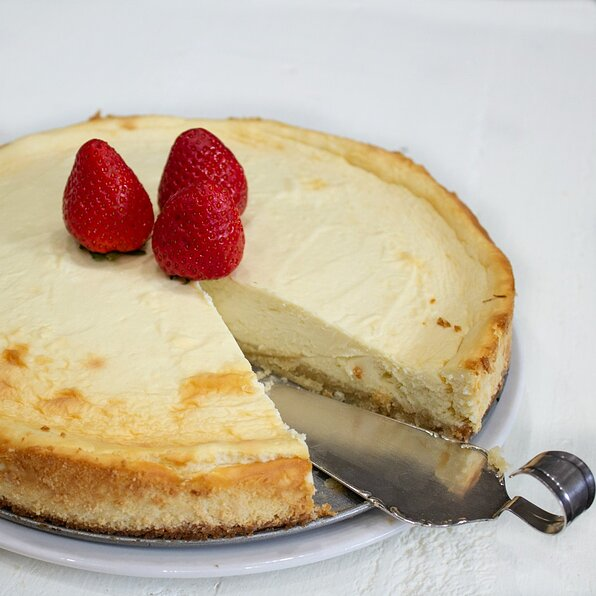

Low Carb Cheesecake
By: Samiisweets
January 18, 2022

Low Carb Cheesecake reference photo, taken by allrecipes.com
This cheesecake is a great alternative for those looking for a low carb option. This is also a great recipe for those who need to limit sugar intake.
It's a very simple recipe that anyone can whip up in a jiff!
Feel free to add fresh fruit to the top to give it an added flavor!
Lets Cook!
Ingredients
Crust
- 2 C - Blanched Almond Flour
- 1/3 C - Butter, Melted
- 3 TBSP - Powdered Erythritol Sweetner
- 1 TSP - Vanilla Extract
Filling
- 32 OZ - Cream Cheese, Softened
- 1 1/4 C - Powdered Erythritol Sweetner
- 3 - Large Eggs
- 1 TBSP - Lemon Juice
- 1 TSP - Vanilla Extract
- 1/3 TSP - Lemon Zest
Steps
- Preheat the oven to 350 degrees F (175 degrees C)
- Grease a 9-inch springform pan. Line the bottom with parchment paper. Wrap the bottom sides of the poan with aluminum foil.
- Stir almond flour, butter, erythritol, and vanilla extract tpheyjer om a small bowl until well combined; the mixture will be crumbly.
Press into the prepared pan bottom.
- Bake on center rack in the preheated oven until just golden, 10-12 minutes. Allow to rest for 10 minutes after.
- Meanwhile, beat cream cheese and powdered sweetner together using an electric stand or hand mixer at low speed until fluffy. Beat in 3 eggs,
1 at a time. Add lemon juice, vanilla extract, and lemon zest. Beat until well combined.
- Bake on center rack in the preheated oven until center is almost set and slightly jiggly in the center, 45-55 minutes.
- Remove from the oven and let cool in the pan. Keep in the pan, cover, and refrigerate to fully set, atleast 4 hours, to overnight.
Run a knife gently around the sides to remove, unclamp, and carefully remove the pan; it should come right off.